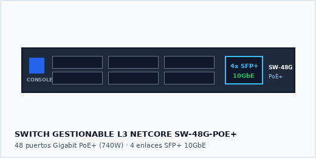

Servidores Rack y Torre
Equipos configurados para virtualización con Proxmox o VMware, controladores de dominio y copias de seguridad.
Ver servidoresEn NETCORE SYSTEMS suministramos hardware profesional para pequeñas empresas, oficinas y salas de servidores. La diferencia frente a otras tiendas online es que incluimos de serie nuestro SERVICIO DE PRECONFIGURACIÓN EN LABORATORIO: antes de enviarte el pedido dejamos montado el RAID, asignadas las direcciones IP, creadas las VLAN y actualizado el firmware.
De este modo recibes el equipo probado y documentado, listo para montarlo en el armario rack y ponerlo a trabajar sin perder horas en ajustes iniciales.
Equipos configurados para virtualización con Proxmox o VMware, controladores de dominio y copias de seguridad.
Ver servidores
Conmutadores con puertos SFP+ 10GbE y firewalls preparados con tus subredes, trunking 802.1Q y túneles VPN.
Ver redes y seguridadTiempo estimado de instalación para un servidor y dos switches gestionables:
| Tarea técnica | Compra estándar sin configurar | Con NETCORE SYSTEMS |
|---|---|---|
| Actualización de BIOS, IPMI y firmware | A realizar por el cliente (2 - 3 horas) | Hecha y probada antes del envío |
| Creación de volúmenes RAID | Discos sin inicializar | Array RAID 1 o RAID 10 creado y verificado |
| Direccionamiento IP y VLANs | Valores por defecto (VLAN 1 / DHCP) | Aplicado según el esquema de red del cliente |
| Tiempo de parada en oficina / CPD | De 4 a 6 horas | Menos de 30 minutos |
Escucha cómo preparamos y verificamos cada pedido antes de enviarlo:
Ejemplo práctico de creación y asignación de VLANs en electrónica de red: